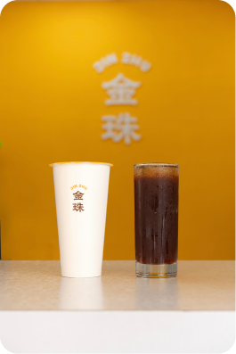
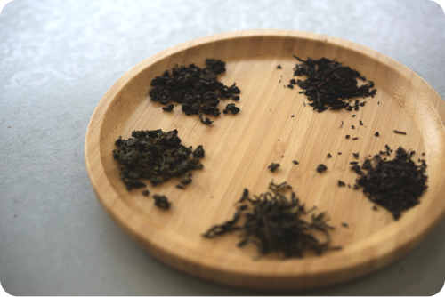
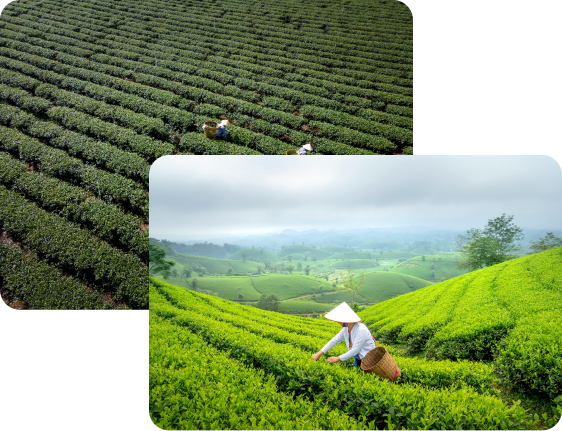
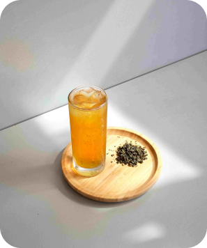
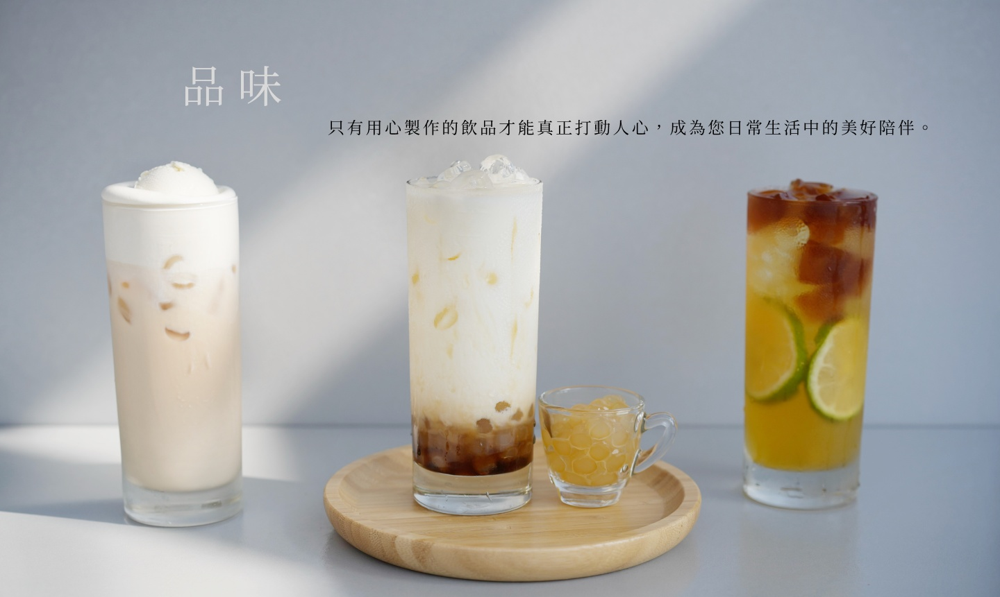

關於我們
ABOUT


品牌緣起
BRAND ORIGIN OF TP TEA
【美式風情．台灣好茶】是我們飲料店的 Slogan，意在融合美式風格與台灣在地文化，打造獨特的茶飲體驗。這不僅是我們的品牌理念，更是我們經營的初心和信念。 我們的用心不僅僅體現在技術研發上，還專注於尋找台灣在地優質的茶葉種植者。這些來自台灣的優質茶葉，經過我們精心挑選和反覆測試，最終呈現為一杯杯香醇的飲品，供顧客享用。我們希望通過這樣的方式，讓更多人認識並喜愛台灣的好茶，並且讓這些辛勤耕耘的茶農們的努力被看見和肯定。這就是我們品牌的核心價值所在。
健康減醣，清爽無負擔
"Healthy low-sugar, refreshing and guilt-free"
在這裡，您可以享受到低糖的美味飲品。我們的飲料含糖量僅有一般飲料店的2/3，讓您在享受美味的同時，減少攝取過多糖分，擁有更健康的生活方式。


品質把關，源自在地
"Quality assured, sourced locally"
我們的茶葉全部來自台灣小農農場，經過精緻化管理，
確保每一片茶葉都是優質的。 從田間到茶杯，我們把關每一道生產流程，
讓您喝得安心。每一口茶飲，都帶給您耳目一新的驚喜。
美式風情，茶飲新潮
"American Style, Trendy Tea Drinks"
我們將美式風格與台灣茶飲文化完美融合，為您帶來耳目一新的茶飲體驗。 獨特的風味，創新的搭配，每一杯都是對傳統的重新演繹。快來我們的店，體驗不一樣的茶飲文化。

